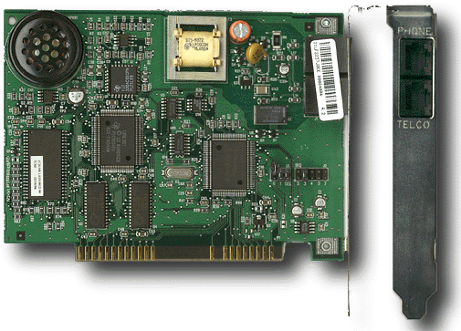

Fax-modem US Robotics 33,600bps, internal
Zamena za skupe fax mašine. Fax poruke se primaju i šalju direktno sa kompjutera. Ako
želite da pošaljete neki pisani dokument sa papira morate ga prvo uskenirati. Fax prima
i šalje poruke dok je kompjuter ukljuèen.
Modemske komunikacije su veoma popularne u poslednje vreme. Za kratko vreme mogu se
preneti veoma važne informacije u izvornom obliku, bez gubitka kvaliteta kao što je to
slueaj ako se dokumenta šalju faksom.
Voice opcija predstavlja elektronsku verziju telefonske sekretarice sa mnogo, mnogo više
funkcija.
Važno!!! Kada kompjuter ne koristite nekoliko dana, obavezno prikljuèak telefona koji ide u modem izvucite iz konektora koji ide u kompjuter. Preko unutrašnje i spoljašnje telefonske instalacije Vaša matièna ploèa direktno je spojena sa telefonskim svetom. Koliko je dobro može biti i loše, naroèito kada napolju grmi i seva.
Funkcije Fax ili Voice modela uglavnom su podržane posebnim softverom, iskljuèivo preko sistema menija. Ovde æe uglavnom biti reèi o funkcijama i radu sa modemima.
Najvažnija odluka koju morate doneti pre kupovine je da li modem treba da bude eksterni ili interni. Zatim na kojoj brzini treba da radi i da li su Vam potrebne dodatne funkcije kao što je Fax ili Voice odnosno telefonska sekretarica.
U èasopisima, koji se bave kompjuterima, možete naæi uporedni test više modela. To æe Vam biti velika pomoæ ukoliko veæ nemate prethodnih iskustava.
Uloga modema je povezivanje dva DTE ili DCE ureðaja, slanje ili primanje fax i glasovnih poruka. Osnovne funkcije su: auto-dial, auto-answer, revers mode dialing; ring, busy and dial tone detection i manual dial option.
- Externi model
- Interni model
- Instalacija softvera
Uz eksterni modem u posebnoj kutiji dobijate: uputstvo za korišæenje, kabl za povezivanje sa telefonskom linijom, data kablom, softver za rad sa modemom. Èesto se desi da uz eksterni modem ne dobijete softver i data kabl, iz prostog razloga što se eksterni modemi mogu "kaèiti" skoro na sve ureðaje koji imaju RS232 interfejs a za mnoge od njih softver i nije potreban.
Na prednjoj ploèi modema nalazi se 8 statusnih, svetleæih dioda. Omoguæavaju Vam praæenje toka veze i rada modema.
Uz interni modem na kartici dobijate: uputstvo, kabl za povezivanje na telefonsku liniju, softver za rad sa modemom.
Komponente na kartici nemojte dodirivati prstima, konstatujte šta na kartici možete podešavati spolja kada je postavite u kompjuter. Proverite i jasno obeležite koji je PHONE a koji LINE konektor za povezivanje sa telefonskom linijom. Prema Vašim potrebama podesite džampere na kartici na odgovarajuæi COM port.
Na adresi i interaptu na kome ae raditi interni modem NE SME raditi ni jedan drugi ureðaj ili softver.
Proèitajte pažljivo kompletno uputstvo za upotrebu. Obieno se modem podešava na COM 2 i IRQ 3.
Podaci za serijske portove:
| adresa | IRQ | |
| COM 1 | 3F8 | 4 |
| COM 2 | 2F8 | 3 |
| COM 3 | 3E8 | 4 |
| COM 4 | 2E8 | 3 |
Ubacite karticu u kompjuter, povežite je sa telefonskom linijom i pomoænim telefonom. U tom sluèaju pomoæni telefon æe raditi kada je kompjuter ukljuèen i iskljuèen pa je to jedan od naèina da se proveri da li je prikljuèivanje na telefonsku liniju dobro izvedeno. Ako imate signal u telefonu, imaæe ga i modem.
Vratite kompjuter na svoje mesto i ukljuèite ga a zatim instalirajte softver. Skoro svaki softver pre svoje instalacije tražiae od Vas da potvrdite neke testove i na taj naèin utvrdite da li je ugradnja modema bila dobra. Po uspešnoj ugradnji modema, softver æe tražiti od Vas podatke za: tip telefonske centrale na koju ste povezani, da li ste na lokalnom ili direktnom telefonu i sl. a zatim æe se instalirati na hard disk.
- Modovi komunikacije
- DATA format
- Protokol
U toku rada modem može biti u command ili u data modu. U command modu sve karaktere izvršava kao komande. U data modu sve podatke prosleðuje kompjuteru ili ureðaju s kojim korespondira. Izuzetak su ESC sekvence koje služe da u toku rada u data modu modem obradi neku komandu bez prekida veze. Znaèi, kada ukucavate komande za setovanje ili kada "ruèno" birate broj, a sve to iz komandne linije, u command ste modu. Po uspostavljanju veze, prelazite u data mod.
Najbitniji detalj kod podešavanja parametara komunikacije. To je npr. sledeæa forma 9600 8N1. Prvi broj (9600) pretstavlja brzinu na kojoj æe se odvijati veza. Brzina na kojoj æete raditi zavisi od modema i kvaliteta telefonske veze. Dužina reèi æe biti 8 bita bez kontrole pariteta (N) i sa jednim stop bitom (1). To su parametri koji se usaglašavaju sa korespodentom.
Preko serijskog porta podaci se šalju bit po bit. Bajtovi se prosleðuju bit po bit zajedno sa kontrolnim bitovima. Ta kombinacija u okviru bajta zove se data format. Sastoji se iz starnog bita (start bit), dejta bita (data bit), pariti (parity bit) i stop bita (stop bit). Dva modema koji komuniciraju, moraju raditi sa istim dejta formatom ( 1 startni, 7 li 8 dejta, pariti i 1 ili 2 stop bita).
Protokoli su BELL i CCITT a njima se odreðuje brzina prenosa u bodima (baud rate)
za odreðeni standard (BELL ili CCITT). Npr.:
bps |
||
| BELL 103 | 300 | |
| CCITT v.21 | 300 | |
| BELL 212A | 1 200 | |
| CCITT v.22 | 1 200 | |
| CCITT v.22bis | 2 400 |
Pretpostavljam da ste modem i softver instalirali isparavno. Sada je potrebno podesiti sadržaj NV RAM-a. Prema modemu i centrali, na koju ste povezani, ukucajte komande koje ae odgovarati vezama koje imate nameru da ostvarujete. Znaèi:
AT&F Da resetujemo poeetno stanje na predefinisano. ATX3 da modem ne traži dialtone signal po preuzimanju tel. linije.
Zatim æete ove izmene snimiti u NV RAM komandom AT&W0 u profile 0. Imate slobodan još jedan memorijski prostor, profile 1. Sadržaj jednog profile mesta u memoriji kopirate u aktivni profile komandom ATZn. Ovo je lakši naèin inicijalizovanja modema, ne morate koristiti duge inicijalizacione stringove prilikom stratovaja komunikacionog softvera, veæ samo ATZ0. Tako da za sve izmene koje eventualno budete pravili, neæete morati menjati sve inicijalizacione stringove.
Sada ste veæ došli do podešavanja koja se odnose na pojedinaène veze. Za svaki BBS ili kompjuter s modemom, sa kojim ete komunicirati podešavate parametre komunikacije.
Npr. za komunikaciju sa SezamPro BBS-om, podesite sledeæe parametre i pozovite broj 3222-592:
14 400 v.42bis modem 57600 8N1. To "normalno" neæe raditi zbog kvaliteta naših telefonskih veza. Praksa je brzinu smanjila na 19200. 2 400 modem (MNP5) 9600 8N1.
Šta da Vam kažem nego da Vam poželim puno sreæe i dobre veze. Vidimo se na
Internetu. Moj
e-mail je procom@EUnet.yu
AT&T8
DTE - Data Terminal Equipment. Oznaèava terminale, kompjutere ili printere.
DCE - Data Communications equipment. Oprema instralirana kod korisnika, mora da omoguæi uspostavljanje, održavanje i prekidanje veze sa DTE
MODEM MODulator - DEModulator
REN Ringer Equivalence Number. Ukoliko je više telefona na jednoj liniji, u centrali na kojoj su nakaèeni mora se pojaèati signal kojim se pobuðuju.
FCC Federal Communications Commision. Zakon u Americi po kome se regulišu pravila u telefonskoj mreži ( npr. class B - klasa za odreðene uslove).
HAYES Standard za modemske komunikacije.
AT ATtention to the modem. Sve naredbe modemu poèinju prefiksom AT.
FULL duplex pritisnuti taster kao signal ide na remote kompjuter pa nazad na monitor.
HALF duplex pritisnuti taster se odmah prikazuje na monitoru.
BBS Bulettin Boards System.
Leased line - 2 žice izmeðu kompjutera ili terminala. Na veæim razdaljinama to su iznajmljene linije kod pošte preko kojih su direktno povezani kompjuteri ili terminali.
BAUD
BPS Bits Per Second.
NV RAM Non Volatile RAM- neispariva RAM memorija. Ne gubi svoj sadržaj po iskljuèivanju kompjutera i modema.
AT&P1 Za evropske zemlje 33/67.
CCITT International Consultative Commitee on Telegraphy and Telephony.
Opis osnovnih, ekstended i v.42bis komandi. Osim osnovnih, ekstended i v.42bis komande mogu se razlikovati od modela do modela modema. U komandnom baferu možete imati do 40 karaktera.
Predefinisane vrednosti ispisane su podebljanim tekstom.
| Komanda | Opcija |
Funkcija | Preporuka |
| A/ | Ponavlja poslednju komandu iz memorije modema | ||
| +++ | Esacape characters omoguaavaju modemu da iz data moda preðu u command mod. Kada kucate ove karaktere, pojavljuju se na drugom modemu a na svom monitoru vidite odgovor OK koji znaèi da ste u command modu. Da se vratite i data mod, otkucajte AT0 i pritisnite ENTER. Registar S2 definiše Esacape karakter. | S2=043 | |
| AT | (ATtention)Potrebno je otkucati pre svih sledeæih komandi. Prenosi modemu informacije o brzini prenosa, data formatu i kontroli pariteta koju koristi kompjuter ili modem sa koga se informacije šalju. | ||
| A | Odgovara na poziv. Prebacuje glasovni poziv u data mode. | ||
| Bn | 0 | CCITT mode | |
| 1 | Bell mode | B1 | |
| Dx | 0 - 9, A - D, # i * | ATDP, | |
| P | pulsno biranje | ||
| R | Revers mod. Prebacije modem u Answer mod odmah posle biranja. | ||
| T | tonsko biranje | ||
| W | èeka na drugi dial tone, recimo posle izlaska s lokalne centrale. Vreme èekanja u sekundama izraženo je u S7. Ako nema drugog tona prijavljuje BUSY ili NO DIALTONE. | ||
| , | pauza od 2 sekunde ili u trajanju koje je setovano u S8. Možete koristiti više zareza zaredom. | S8=5 | |
| ; | Povratak u command mod posle biranja. Smešta se na kraj komande. Koristi se kada je potrebno posle biranja nastaviti rad u komandnom modu, recimo u direktnoj vezi. |
||
| DS=n | Bira jedan od eetiri memorisana broja u NV RAM-u. n je cifra 0 do 3. Broj memorišete naredbom &Z. | ||
| En | E0 | Iskljuèuje prikazivanje naredbi na monitoru. | |
| E1 | Prikazuje naredbe na monitoru. | E1 | |
| Hn | H0 | Prekid veze (kao da spušta slušalicu). | |
| H1 | Preuzima liniju (kao podignuta slušalica) | ||
| In | I0 | ID kod modema | |
| I1 | ID ROM-a | ||
| I2 | test memorije | I2 | |
| I3 | ID v.42bis-a | ||
| I4 | ID interni | ||
| Ln | L0 ili 1 | najtiši zvuk iz zvuenika. | |
| L2 | srednja jaèina zvuka iz zvuènika. | L2 | |
| L3 | najaèa jaèina zvuka. | ||
| Mn | M0 | iskljuèuje interni zvuènik. | |
| M1 | Iskljuèuje interni zvuènik po uspostavljanju veze. | M1 | |
| M2 | ne iskljuèuje interni zvuènik. | ||
| M3 | iskljuèuje interni zvuènik dok bira broj. | ||
| Nn | N0 | uspostavlja brzinu koju ima DTE. | |
| N1 | pregovara o brzini na kojoj ae se odvijati komunikacija. | N1 | |
| On | O0 | vraæa se u data mod. | |
| O1 | |||
| P | postavlja pulsno biranje kao predefinisano | ||
| Qn | Q0 | Modem šalje odgovore na komande koje su mu zadate. | Q0 |
| Q1 | iskljuèuje odgovore modema, recimo ako je nakaèen na printer. | ||
| Sr? | Èita sadržaj iz registra r koji može biti 0 do 29. | ||
| Sr=n | Upisuje u registar r vrednost n. | ||
| T | postavlja tonsko biranje kao predefinisano | ||
| &Vn | V0 | prikazuje aktivini i profile 0. | |
| V1 | prikazuje aktivini i profile 1. | ||
| Xn | X0 | ne može da detektuje busy i dialtone | |
| X1 | ne traži busy i dialtone | ||
| X2 | detektuje dialtone, ne detektuje busy signal. | ||
| X3 | detektuje busy, ne detektuje dialtone signal. | X3 | |
| X4 | busy i dialtone detekcija | ||
| Yn | Y0 | Modem ne šalje i ne odgovara na break signal. | Y0 |
| Y1 | Modem šalje signal 4 sekunde pre iskljuèivanja. | ||
| Zn | Z0 | Upisuje u aktivni profil sadržaj iz profile 0. | Z0 |
| Z1 | Upisuje u aktivni profil sadržaj iz profile 1. |
Sve komande mogu se prekinuti sa CTRL+X.
| Komanda | Opcija |
Funkcija | Preporuka |